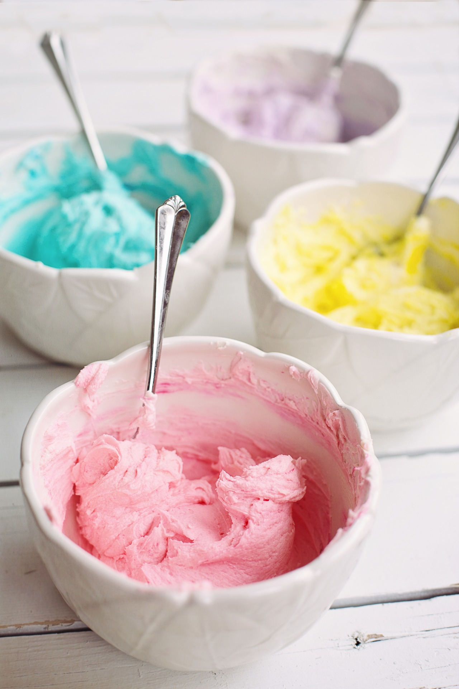
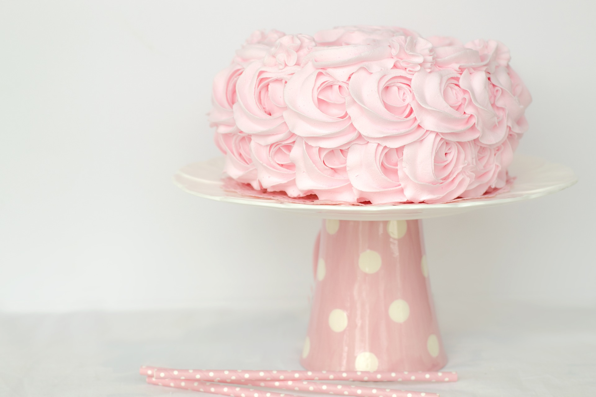

Monikäyttöinen voikreemi
Tämä helppo voikreemi on todella monipuolinen. Se sopii niin kakkujen täytteeksi ja koristeeksi, kuppikakkujen päälle tai vaikkapa macaronsien väliin. Sitä voi myös maustaa ja värjätä loputtomin eri tavoin. Vain mielikuvitus on rajana!
Raaka-aineet
- 200 g huoneenlämpöistä voita
- 4-5 dl tomusokeria (myös makuversio käy)
- 1 rkl maitoa
- väriainetta (jauhe tai pasta)
- aromi, marjajauhe tai muu mauste
Valmistus
- Vatkaa voi kuohkeaksi (seos vaalenee ja kuohkeentuu).
- Aloita lisäämällä tomusokeri vähän kerrallaan koko ajan vatkaten.
- Kun olet lisännyt kaiken tomusokerin, jatka vatkaamista usean minuutin ajan.
- Lisää kylmä maito ja jatka edelleen vatkaamista.
- Jos värjäät tai maustat kreemin, lisää nämä loppuvaiheessa.
- Valmis kreemi on kuohkeaa, vaaleaa ja silkkistä eikä maistu voilta.
Voikreemi säilyy kylmässä muutaman päivän. Kreemin voit myös pakastaa, ota silloin kreemi ajoissa sulamaan ja vaahdota se uudelleen ennen käyttöä.


